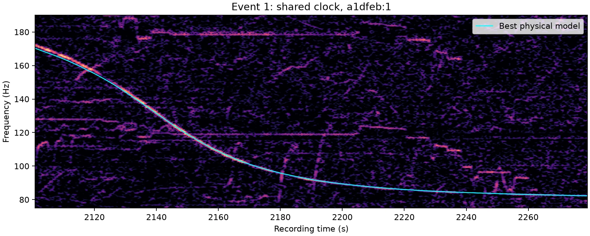
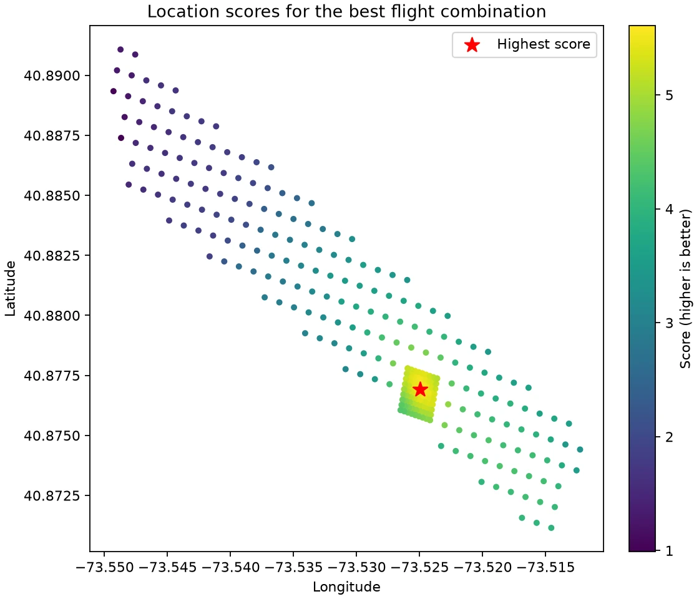

From pitch to place.
Start with a familiar sound. A plane approaches, passes overhead and fades. The shape of its pitch change carries information about the flight path and the listener’s position.
Move the microphone.
A moving source squeezes sound waves together on approach and spreads them out as it recedes. Play the model or scrub through the pass. Try a higher speed, then change the microphone distance and compare the curves.
Adjust the model
The physics behind the curve
For a steady source tone and a stationary microphone, the received frequency is
f = f₀ c / (c + vᵣ). Here f₀ is the source frequency, c is sound
speed, and vᵣ is radial velocity at emission, positive when moving away.
Sound emitted at time τ arrives at t = τ + r(τ) / c. The model solves for that
emission time before calculating the pitch. The sound of closest approach arrives after the aircraft has
passed.
Find a moving tone.
Automatic discovery looks through the entire recording for ridges that change frequency over time. Harmonics that move together can describe one passage. The software keeps their measurements for the next stage.

Reconstruct the sound’s journey.
Aircraft broadcast their positions through ADS-B. For a selected place and time, historical tracks let the software predict the pitch that would reach a listener. Sound takes time to travel, so the prediction uses the aircraft’s position when the sound left it.


Fit one receiver to every pass.
Each independent flyover adds another constraint. A candidate must fit the passages at one microphone position and on one recording clock. Competing fits, gaps in flight coverage or unfinished computation can leave the decision inconclusive.
Read the decision rules

What you bring to a search
Acoustic discovery can run offline on a recording alone. To compare historical flights, supply a defensible UTC window for the first sample and a search region. The file upload time tells you when a server saw it, not when the aircraft passed.
Flight coverage
Current flight searches include confirmed non-jet aircraft. Country profiles define geographic bounds. Actual historical coverage depends on the receiver network, date and terrain. Geographic profiles
Run it on your
own recording.
Scan the audio on your own machine. Add a recording-time window to compare what you hear with the flight archive.
Installation guideLocal browser interface
pipx install dopplergeist
dopplergeist serve --jobs jobs --online --max-runtime 14400 --port 8765
Open http://127.0.0.1:8765. Use Linux, macOS or WSL with Python 3.11+ and FFmpeg. On Intel
Macs, use Python 3.11–3.13.
Preview the local interface

Citation and sources
If you use or write about DOPPLERGEIST, please credit Cinna Davis and cite the method page. For a specific experiment, please link to the field notes and include the version or commit used.
Please also cite itsdavis.com. If author profiles would help readers, you’re welcome to link to Cinna Davis on GitHub and X (Twitter).